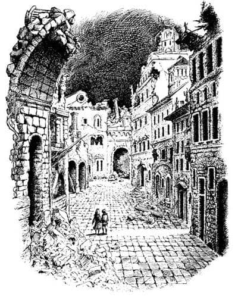
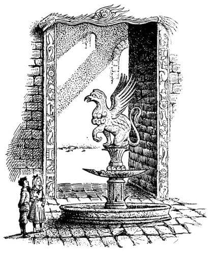
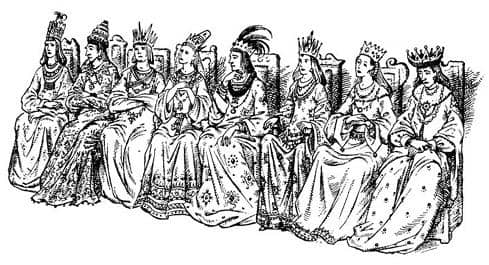

Çan ve Çekiç
Bu kez kimsenin büyüden kuşkusu yoktu. Aşağıya doğru hızla giderken önce karanlıktan ve sonra da her şeye yorumlanabilecek birtakım dönen şekiller arasından geçtiler. Ortalık aydınlandı. Sonra aniden ayaklarını sağlam bir zemine bastılar. Az sonra da her şey belirginleşti ve etraflarını görebildiler.
“Ne acayip bir yer” dedi Digory.
“Hiç hoşlanmadım” dedi Polly omuzlarını silkerek.
İlk fark ettikleri şey ışıktı. Ne günışığına, ne elektrik ışığına ne de lamba, mum, ya da daha önce gördükleri herhangi bir ışığa benziyordu. Soluk, epeyce kırmızıya çalan ve hiç de sevimli olmayan bir ışıktı. Çok düzgündü ve hiç titremiyordu. Yüzeyi taş döşeli düzgün bir yerde ayakta duruyorlardı ve çevrelerinde binalar yükselmekteydi. Açık havada; avluya benzer bir yerdeydiler. Gökyüzü inanılmaz derecede karanlıktı – neredeyse simsiyah bir mavilikteydi. Gökyüzüne baktığınızda, gerçekte etrafın aydınlık oluşuna şaşırırdınız.
“Hava çok tuhaf burada” dedi Digory. “Acaba güneş tutulmasına ya da fırtınaya mı denk geldik?”
“Hiç hoşuma gitmiyor” dedi Polly.
İkisi de nedenini bilmeden fısıldaşıyorlardı. El ele tutuşmalarına bir neden olmadığı halde hâlâ birbirlerinin ellerini bırakmamışlardı.
Avlunun etrafındaki duvarlar çok yüksekti. Duvarlarda birçok büyük pencere, karanlıktan başka bir şey görülmeyen camsız pencereler vardı. Aşağıda ise, demiryolu tünellerinin ağızları gibi uykulu, kemerli sütunlar bulunmaktaydı. Hava epeyce soğuktu.
Tüm yapıların taşları kırmızı bir renge bürünmüştü, bunun nedeni o garip ışık olmalıydı. Açıkça her şey çok eskiydi. Avluyu kaplayan kayrak taşların çoğu çatlaktı. Hiçbiri tam yerine oturmamıştı ve sivri kenarları aşınmıştı. Kemerli kapılardan biri yarı beline kadar molozla doluydu. Çocuklar, avlunun her tarafını görmek amacıyla sürekli dönüp duruyorlardı. Bunun bir nedeni de, arkaları dönükken birinin – ya da bir şeyin – o pencerelerden onlara bakmasından korkmalarıydı.
Digory sonunda, “Burada birinin yaşadığını düşünüyor musun?” dedi fısıltıyla.
“Hayır” dedi Polly. “Her şey harap olmuş. Geldiğimizden beri bir ses bile duymadık.”
“Sessizce durup dinleyelim azıcık” diye teklif etti Digory. Sessizce dikilip kulak kesildiler ama tüm işittikleri kendi kalp atışlarıydı. Burası da en azından Dünyalar Arasındaki Orman kadar sessizdi. Fakat bu farklı bir sessizlikti. Ormanın sessizliği, derin ve sıcak (neredeyse ağaçların büyüdüğünü duyabilirdiniz) ve de hayat doluydu; buradaki ise ölü, soğuk ve boş bir sessizlikti. Burada bir şeylerin büyüdüğü düşünülemezdi bile.

“Eve dönelim” dedi Polly.
“Fakat daha bir şey görmedik ki” dedi Digory. “Hazır buradayken etrafa bir göz atsak iyi olur.”
“Burada ilginç hiçbir şeyin olmadığına eminim.”
“Eğer vardığında korkudan etrafa bir göz bile atmayacaksan, seni başka dünyalara götüren sihirli bir yüzük bulmanın hiçbir anlamı yok ki.”
“Korkudan kim söz etti?” dedi Polly, Digory’nin elini bırakarak.
“Ben yalnızca burayı araştırmaya pek hevesli olmadığını düşünmüştüm.”
“Senin gideceğin her yere ben de giderim.”
“İstediğimiz an burayı terk edebiliriz” dedi Digory. “Yeşil yüzükleri çıkarıp sağ cebimize koyalım. Tüm yapmamız gereken, sarı yüzüklerin sol cebimizde olduğunu hatırlamak. Elini istediğin kadar cebinin yanında tut ama sakın cebine sokma, aksi takdirde sarı yüzüğe dokunup ortadan kaybolursun.”
Konuştuklarını uyguladıktan sonra sessizce binanın içine açılan kemerli kapılardan birine yaklaştılar. Eşikte durup içeriye baktıklarında hiç de önceden düşündükleri kadar karanlık olmadığını gördüler. Kapı, boş gibi görünen geniş ve gölgeli bir salona açılıyordu; salonun öbür yanında aralarında kemerlerin bulunduğu sütunlar vardı ve kemerlerin arasından daha önce gördükleri aynı ışık süzülmekteydi. Zeminde çukurların ya da ayaklarının takılacağı engellerin olabileceği korkusuyla, dikkatle yürüyerek öbür tarafa geçtiler. Bu çok uzun bir yürüyüş gibi geldi onlara. Öbür tarafa vardıklarında, kemerlerin arasından geçtiler ve kendilerini daha büyük bir başka avluda buldular.
“Orası pek de güvenli görünmüyor” dedi Polly, sanki her an yıkılmaya hazırmış gibi, duvarların avluya doğru eğildiği bir yeri göstererek. Bir yerde sütunlardan birisi eksikti ve kemerin bir ucu orada, dayanaksız şekilde asılı duruyordu. Burası açıkça, yüzlerce, belki de binlerce yıl önce terk edilmişti.
“Şimdiye kadar dayandıysa biraz daha dayanır sanırım” dedi Digory. “Fakat çok sessiz olmalıyız. Biliyorsun gürültü bazen bazı şeyleri hareketlendirir – Alpler’deki çığlar gibi.”
O avludan başka bir kapıya, büyük merdivenlerden yukarıya ve oradan da bu devasa yerde başları dönene kadar, birbirine açılan geniş odalara geçtiler. Arada bir, açık havaya çıkıp bu muazzam sarayın çevresinin nasıl olduğunu göreceklerini sandılar; insanların yaşadığı zamanlarda muhteşem bir yer olmalıydı. Salonlardan birinde bir havuzlu çeşme vardı. Büyük bir taş canavar, kanatları genişçe açılmış ve ağzı aralanmış olarak duruyordu ve ağzının derinliklerinde, bir zamanlar suyun aktığı borunun bir parçası görülmekteydi. Onun altında, suyun biriktiği, ancak şimdi bir kemik kadar kupkuru, genişçe bir havuz vardı. Yerlerde, sütunlara sarılmış ve böylece onların yıkılmasına neden olmuş bir tür sarmaşığın kurumuş dalları vardı; anlaşılan bitki uzun zaman önce ölmüştü. Bir yıkıntıda bulmayı beklediğiniz örümcek, karınca ve benzeri canlılar yoktu. Döşeme taşlarının arasındaki kuru toprakta ne ot ne de yosun vardı.
Buranın o kadar sıkıcı ve tekdüze bir havası vardı ki, altından yapılmış gibi görünen dev metal kapılara geldiklerinde, Digory bile sarı yüzüklerini takıp ara bölgedeki sıcak ve canlı ormana geri dönmeyi düşünüyordu. Kapılardan biri azıcık aralıktı. Ve kuşkusuz bakmak üzere içeriye girdiler. İkisi de irkilip derin birer nefes aldılar; çünkü nihayet burada görmeye değer bir şey vardı.
Bir an için odanın insanlarla – oturan ve kıpırtısız duran yüzlerce insanla dolu olduğunu düşündüler. Tahmin edebileceğiniz gibi, Polly ve Digory de onlara bakarak, uzun bir süre hareketsiz durdular. Başlangıçta, gördükleri şeylerin gerçek insanlar olmadığına karar verdiler; ne hareket ediyorlardı ne de soluk alıp verişleri duyuluyordu. Görebileceğiniz en harika balmumu heykellere benziyorlardı.

Bu kez Polly öne geçti. Bu odada onu Digory’den daha fazla ilgilendiren bir şey vardı; tüm heykeller ışıltılı giysiler taşıyorlardı. Eğer giysilerle biraz ilgileniyorsanız, onlara takılıp kalmamak olanaksızdı. Renklerinin parlaklığı bu odaya neşe katmasa da, diğer odaların boşluğu ve tozluluğu yanında, burayı zengin ve asil gösteriyordu. Bu odanın daha çok penceresi vardı ve oldukça da aydınlıktı.
Giysileri tarif etmem çok zor. Bütün heykeller giysiliydi ve başlarında taçlar vardı. Giysiler kırmızı, gümüş grisi, koyu mor ve canlı yeşildi; üzerlerine çiçek resimleri, acayip canavarlar, süslü şekiller iğne oyasıyla işlenmişti. Taçlarında, boyunlarındaki zincirlerde ve iliştirilebilecek her yanlarında, şaşılacak büyüklükte ve parlaklıkta değerli taşlar görülüyordu.
“Giysiler neden bu zamana kadar çürümemiş acaba?” diye sordu Polly.
“Büyü” diye fısıldadı Digory. “Hissetmiyor musun? Bahse girerim ki bu oda büyüyle dolu. İçeriye girdiğimiz an bunu hissetmiştim.”
“Bu giysilerin herhangi biri yüzlerce sterline mal olur” dedi Polly.
Ancak Digory, heykellerin yüzleriyle daha fazla ilgileniyordu ve bunlar, gerçekten de görülmeye değerdi. İnsanlar odanın her iki yanında taş koltuklara oturmuşlardı ve odanın ortası boş bırakılmıştı. Burada yürüyebilir ve insanların yüzlerine bakabilirdiniz.
“Sanırım iyi insanlardı” dedi Digory.
Polly başıyla onayladı. Görebildikleri tüm yüzler gerçekten iyi insanların yüzüydü. Hem erkek, hem de kadınlar kibar ve bilge görünüşlüydü. Asil bir soydan geldikleri belli oluyordu. Fakat çocuklar, odada birkaç adım ilerledikten sonra biraz farklı yüzlerle karşılaştılar. Bunlar ciddi tavırlı yüzlerdi. Onlara benzeyen canlı insanlarla karşılaşsanız, adımlarınıza dikkat etmeniz gerektiğini hissederdiniz. Odanın ortasına doğru biraz daha ilerlediklerinde kendilerini hiç de hoşlanmadıkları yüzler arasında buldular. Buradaki yüzler çok güçlü, gururlu ve mutlu, ancak acımasız görünüşlüydüler. Az ilerdekiler daha da acımasız görünüyorlardı. Onun da ilerisindekiler, hâlâ acımasızdılar ancak yüzlerinde mutluluktan eser yoktu. Hatta üzüntülü yüzlerdi bunlar; sanki halkları korkunç şeyler yaşamış, büyük acılara katlanmak zorunda kalmış gibiydiler. En ilginci en sondaki heykeldi – diğerlerinden çok daha zengince giyinmiş bir kadındı, çok uzun boyluydu (zaten bu odadaki bütün heykeller bizim dünyamızdaki insanlardan daha uzundu) ve soluğunuzu kesecek kadar sert ve gururlu bir görüntüsü vardı. Aynı zamanda çok da güzeldi. Digory tüm yaşamı boyunca bu kadar güzel bir kadın görmediğini söyledi. Polly’nin, onun özellikle güzel olan hiçbir yanını görmediğini söylemesi, nazikçe eklenmelidir burada.

Dediğim gibi bu kadın sonuncu heykeldi fakat odanın kalan bölümü, sanki daha büyük bir heykel koleksiyonu için planlanmış gibi, boş koltuklarla doluydu.
“Keşke tüm bunların ardındaki hikâyeyi bilseydik” dedi Digory. “Haydi geri dönelim ve odanın ortasındaki masaya benzer şeye bir göz atalım.”
Odanın ortasındaki şey pek de masaya benzemiyordu. Bu, bir metreden biraz daha yüksek dörtköşe bir sütundu ve üzerinde küçük altın bir çanın asılı olduğu ince bir kemer vardı; onun yanında da çanı çalmak için küçük bir altın çekiç.
“Acaba?.. Acaba?.. Acaba?..” dedi Digory.
“Burada bir şeyler yazıyor galiba” dedi Polly, eğilip sütunun yan yüzeyine bakarak.
“Evet, yazılar var ama okuyamayız ki.”
“Okuyamaz mıyız? Belli olmaz” dedi Polly.
İkisi de dikkatle baktılar. Tahmin ettiğiniz gibi, taşa oyulmuş harfler tuhaftı. Ne var ki o anda büyük bir mucize oldu; çocuklar taşa baktıkça, harflerin tuhaflığına karşın, yazılanları anlayabildiklerini fark ettiler. Eğer Digory birkaç dakika önceki sözlerini, yani odanın büyülü olduğunu söylediğini hatırlasaydı, büyünün etkisini göstermeye başladığını tahmin edebilirdi. Fakat bunu düşünemeyecek kadar müthiş bir merak içindeydi. Sütunun üzerinde ne yazdığını öğrenmeyi gittikçe daha çok istiyordu. Kısa bir süre sonra ikisi de bunu öğrendiler. Yazılanlar şöyleydi – şiiri o odada okuduğunuzda bundan daha hoştu, ancak şunun gibi bir şeydi:
Seçimini yap maceracı Yabancı
Tehlikeyi bekle, çal şu çanı
Veya delirene kadar merak et
Olacak şeyleri, eğer çalarsan
“Korkmaya gerek yok!” dedi Polly. “Tehlikeye atılmak istemiyoruz.”
“Fakat görmüyor musun, bu hiç de iyi değil!” dedi Digory. “Artık vazgeçemeyiz. Çanı çalmazsak, neler olacağını hep merak edip duracağız. Bunu düşünerek delirmek için eve dönemem ben. Korkmuyorum!”
“Gülünç olma” dedi Polly. “Kim delirir ki bunun yüzünden? Ne olacağı kimin umrunda?”
“Bu noktaya kadar gelen herkesten, sonunda delirene kadar ilerlemesini beklerim ben. İşin büyüsü de burada, görmüyor musun? Büyünün şimdiden beni etkilediğini hissediyorum.”
“Ben hiçbir şey hissetmiyorum” diye tersledi Polly. “Ve senin de bir şey hissettiğini sanmıyorum. Sadece öyleymiş gibi davranıyorsun.”
“Senin tüm bildiğin bu” dedi Digory. “Bu senin bir kız olmandan kaynaklanıyor. Kızlar bir şey öğrenmek yerine, bir şeyler yapanlar hakkında dedikodu edip saçmalarlar.”
“Aynı dayın gibi konuştun” dedi Polly.
“Konumuz bu değil” dedi Digory. “Konuştuğumuz şey—”
“Ne kadar erkekçe!” dedi Polly sesini kalınlaştırarak; sonra gerçek sesiyle aceleyle ekledi, “Benim de yalnızca bir kadın gibi davrandığımı söyleme, bu hiç de komik olmaz.”
“Senin gibi bir çocuğa kadın demek aklımın köşesinden bile geçmez” dedi Digory mağrurca.
Şimdi gerçekten çok öfkelenen Polly, “Ah, ben bir çocuğum, ha?” dedi. “Yanında bir çocukla dolaşmaktan daha fazla rahatsız olmana gerek yok. Gidiyorum. Buradan bıktım. Senden de bıktım – seni canavar, küstah, dik kafalı domuz!”
“Yok canım!” dedi Digory, olduğundan daha da öfkeli bir sesle; çünkü Polly’nin elinin sarı yüzüğe dokunmak üzere cebine doğru gittiğini görmüştü. Bundan sonra yaptığı şeyin hiçbir bahanesi yoktu, yalnızca sonradan (onunla beraber birçok insanın da) çok üzüldüğünü söyleyebilirim. Polly’nin eli cebine girmeden önce, sırtı Polly’nin göğsüne gelecek şekilde onu bileğinden yakaladı. Sonra dirseğiyle onun diğer kolunu iterken hızla eğilip çekici aldı ve altın çana hafifçe vurdu. Sonra da Polly’yi bıraktı. Ayrıldıklarında, nefes nefese birbirlerine bakıyorlardı. Polly, korkudan ya da Digory’nin bileğini kötü bir şekilde acıtmasından değil, çok öfkelendiği için ağlamak üzereydi. Fakat iki saniye sonra, kavgalarını tamamen unutturan bir şeyi düşünmek zorunda kaldılar.
Çana vurulduğu zaman çok kuvvetli olmayan tatlı bir ses çıkmıştı. Fakat giderek azalıp kesileceği yerde, sürüyordu ve sürdükçe de artıyordu. Bir dakika geçmeden, başlangıçtakinden iki kez daha kuvvetliydi. Daha sonra o kadar kuvvetlendi ki, çocuklar konuşmayı deneseler (ama onlar şimdilik bunu düşünmüyorlardı – ağızları açık duruyorlardı) birbirlerini işitemeyeceklerdi. Hâlâ süren bu tek notalık tatlı ses, gerçi korkunç bir yanı da vardı ama, oda bu sesle titreşene kadar arttı ve ayaklarının altındaki taş zeminin titrediğini hissettiler. Ve sonra, ilkin uzaktan gelen bir tren sesi gibi olan ve sonra da yıkılan bir ağacın yere çarpmasına benzeyen belirsiz, korkunç bir sesle karıştı. En sonunda ani bir gümbürtü ve onları neredeyse yere düşürecek bir sarsıntıyla odanın öte tarafındaki çatının yaklaşık dörtte biri göçtü, etraflarına taşlar düştü ve duvarlar sallandı. Çandan gelen ses durdu. Toz bulutları yere çöktü. Ortalık yeniden sessizliğe büründü.
Çatının göçmesinin nedeninin büyü mü, yoksa çanın dayanılmayacak kadar güçlü sesinin zaten göçmekte olan duvarların dayanamayacağı bir titreşim yaratması mı olduğu hiçbir zaman anlaşılamadı.
“İşte! Umarım tatmin olmuşsundur artık” dedi Polly nefes nefese.
“Neyse ki sona erdi” dedi Digory.
İkisi de bittiğini sanmışlardı ama yaşamlarında hiç bu kadar yanılmamışlardı.